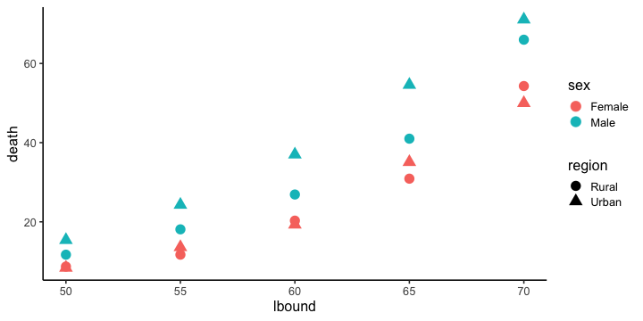
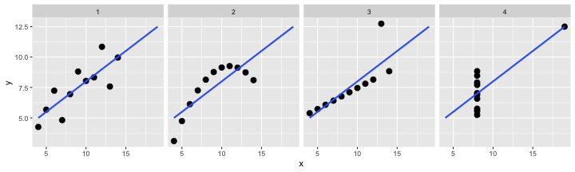
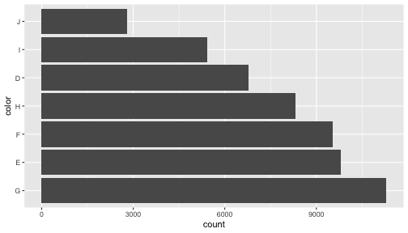

Hands-on Introduction to R 2020
- Why do we use R?
- R basics
- Visualization with R
- Tidying and transforming data with R
- Statistical analysis with R
2020-06-03
データ解析のおおまかな流れ
- コンピュータ環境の整備
- データの取得、読み込み
- 探索的データ解析
- 前処理、加工 (地味。意外と重い。今回の主題)
- 可視化、仮説生成 (派手！楽しい！前回の主題)
- 統計解析、仮説検証 (みんな勉強したがる)
- 報告、発表

可視化だいじ。わかった。
情報の整理 → 正しい解析・新しい発見・仮説生成

でもデータ分析に費やす労力の8割は前処理らしいよ。。。
機械処理しやすい形 vs 人が読み書きしやすい形
- 作図や解析に使えるデータ形式はほぼ決まってる
ggplot(data, ...),glm(..., data, ...), …- 出発点となるデータはさまざま
- 実験ノート、フィールドノート、データベース、…
Happy families are all alike;
every unhappy family is unhappy in its own way
— Leo Tolstoy “Anna Karenina”
tidy datasets are all alike,
but every messy dataset is messy in its own way
— Hadley Wickham, creator of tidyverse
整然データ tidy data
- 縦1列は1つの変数
- 横1行は1つの観測
- 1セルは1つの値
print(diamonds)
carat cut color clarity depth table price x y z
<dbl> <ord> <ord> <ord> <dbl> <dbl> <int> <dbl> <dbl> <dbl>
1 0.23 Ideal E SI2 61.5 55 326 3.95 3.98 2.43
2 0.21 Premium E SI1 59.8 61 326 3.89 3.84 2.31
3 0.23 Good E VS1 56.9 65 327 4.05 4.07 2.31
4 0.29 Premium I VS2 62.4 58 334 4.20 4.23 2.63
--
53937 0.72 Good D SI1 63.1 55 2757 5.69 5.75 3.61
53938 0.70 Very Good D SI1 62.8 60 2757 5.66 5.68 3.56
53939 0.86 Premium H SI2 61.0 58 2757 6.15 6.12 3.74
53940 0.75 Ideal D SI2 62.2 55 2757 5.83 5.87 3.64
整然データ tidy data vs 雑然データ messy data


横1行は1つの観測
1セルは1つの値
整然データ tidy data vs 雑然データ messy data


横1行は1つの観測
1セルは1つの値
整然データ tidy data vs 雑然データ messy data


横1行は1つの観測
1セルは1つの値
整然データ tidy data vs 雑然データ messy data

横1行は1つの観測
1セルは1つの値
整然データのご利益の一例
x軸、y軸、色分け、パネル分けなどを列の名前で指定して簡単作図:
ggplot(diamonds, aes(x = carat, y = price)) +
geom_point(mapping = aes(color = color, size = clarity)) +
facet_wrap(~ cut)

Today we learn data preparation
VADeaths
Rural Male Rural Female Urban Male Urban Female
50-54 11.7 8.7 15.4 8.4
55-59 18.1 11.7 24.3 13.6
60-64 26.9 20.3 37.0 19.3
65-69 41.0 30.9 54.6 35.1
70-74 66.0 54.3 71.1 50.0
↓ 下ごしらえ: 作図・解析で使いやすい整然データに
lbound ubound region sex death
<int> <int> <chr> <chr> <dbl>
1 50 54 Rural Male 11.7
2 50 54 Rural Female 8.7
3 50 54 Urban Male 15.4
4 50 54 Urban Female 8.4
--
17 70 74 Rural Male 66.0
18 70 74 Rural Female 54.3
19 70 74 Urban Male 71.1
20 70 74 Urban Female 50.0
前処理は大きく2つに分けられる
- データ構造を対象とする処理 👈
- 使いたい部分だけ抽出
- グループごとに特徴を要約
- 大きい順に並べ替え
- 異なるテーブルの結合
- 変形: 縦長 ↔ 横広
- データ内容を対象とする処理
- 数値を変換する (e.g., 対数、座標系)
- 変換: 連続変数 ↔ カテゴリカル変数 ↔ ダミー変数
- 欠損値
NAに対処 - 文字列から数値や日時を抜き出す
tidyverseに便利な道具が揃ってる

Rでデータを上手に扱うためのパッケージ群
install.packages("tidyverse")
library(tidyverse)
# core packages are loaded
- 統一的な使い勝手
- シンプルな関数を繋げて使うデザイン
dplyr — data.frameの高速処理担当

シンプルな関数がたくさん。繋げて使う (piping)
- 抽出
- 列:
select(), - 行:
filter(),distinct(),sample_n() - 要約・集計
group_by(),summarize(),count()- ソート
arrange()- 結合
- 行方向:
bind_rows() - 列方向:
left_join(),inner_join(),full_join() - 列の追加・変更
mutate(),rename()
dplyr 使用例
小さな関数を繋げて使う流れ作業:
result = diamonds %>% # 生データから出発して
select(carat, cut, price) %>% # 列を抽出して
filter(carat > 2) %>% # 行を抽出して
group_by(cut) %>% # グループ化して
summarize_all(mean) %>% # それぞれ平均を計算
print() # 表示してみる
cut carat price
<ord> <dbl> <dbl>
1 Fair 2.297692 11972.12
2 Good 2.139226 14628.99
3 Very Good 2.120232 15133.04
4 Premium 2.155707 14992.23
5 Ideal 2.147463 15589.13
この見慣れぬ記号 %>% は何？
Pipe operator (パイプ演算子) %>%
パイプの左側の変数を、右側の関数の第一引数にねじ込む:
diamonds %>% filter(carat > 2)
filter(diamonds, carat > 2) # これと同じ
# 前処理の流れ作業に便利:
diamonds %>% select(carat, price) %>% filter(carat > 2) %>% ...
# data %>% do_A() %>% do_B() %>% do_C() %>% ...
[問] パイプを使わない形に書き換えよう:
seq_len(6) %>% sum()
[1] 21
letters %>% toupper() %>% head(3)
[1] "A" "B" "C"
[解答例]
sum(seq_len(6))
head(toupper(letters), 3)
パイプ演算子 %>% を使わない方法
😐 一時変数を使って:
tmp1 = select(diamonds, carat, cut, price) # 列を抽出して
tmp2 = filter(tmp1, carat > 2) # 行を抽出して
tmp3 = group_by(tmp2, cut) # グループ化して
result = summarize_all(tmp3, mean) # それぞれ平均を計算
😐 もしくは全部同じ名前で:
result = select(diamonds, carat, cut, price) # 列を抽出して
result = filter(result, carat > 2) # 行を抽出して
result = group_by(result, cut) # グループ化して
result = summarize_all(result, mean) # それぞれ平均を計算
どちらも悪くない。 何度も変数名を入力するのがやや冗長。
パイプ演算子 %>% を使わない方法
😫 一時変数を使わずに:
result = summarize_all( # それぞれ平均を計算
group_by( # グループ化して
filter( # 行を抽出して
select(diamonds, carat, cut, price), # 列を抽出して
carat > 2), # 行を抽出して
cut), # グループ化して
mean) # それぞれ平均を計算
🤪 改行さえせずに:
result = summarize_all(group_by(filter(select(diamonds, carat, cut, price), carat > 2), cut), mean)
論理の流れとプログラムの流れが合わず、目が行ったり来たり。
さっきのほうがぜんぜんマシ。
パイプ演算子 %>% を使おう
😁 慣れれば、論理の流れを追いやすい:
result = diamonds %>%
select(carat, cut, price) %>% # 列を抽出して
filter(carat > 2) %>% # 行を抽出して
group_by(cut) %>% # グループ化して
summarize_all(mean) %>% # それぞれ平均を計算
print() # 表示してみる
cut carat price
<ord> <dbl> <dbl>
1 Fair 2.297692 11972.12
2 Good 2.139226 14628.99
3 Very Good 2.120232 15133.04
4 Premium 2.155707 14992.23
5 Ideal 2.147463 15589.13
慣れるまではちょっと大変かも。 無理して使わなくても大丈夫。
dplyrを使ってみる準備
パッケージを読み込んで、データを見てみる
# install.packages("tidyverse")
library(tidyverse)
print(diamonds)
View(diamonds) # RStudio
carat cut color clarity depth table price x y z
<dbl> <ord> <ord> <ord> <dbl> <dbl> <int> <dbl> <dbl> <dbl>
1 0.23 Ideal E SI2 61.5 55 326 3.95 3.98 2.43
2 0.21 Premium E SI1 59.8 61 326 3.89 3.84 2.31
3 0.23 Good E VS1 56.9 65 327 4.05 4.07 2.31
4 0.29 Premium I VS2 62.4 58 334 4.20 4.23 2.63
--
53937 0.72 Good D SI1 63.1 55 2757 5.69 5.75 3.61
53938 0.70 Very Good D SI1 62.8 60 2757 5.66 5.68 3.56
53939 0.86 Premium H SI2 61.0 58 2757 6.15 6.12 3.74
53940 0.75 Ideal D SI2 62.2 55 2757 5.83 5.87 3.64
列の抽出: select()
列の番号で指定:
result = diamonds %>%
select(1, 2, 7) %>%
print()
carat cut price
<dbl> <ord> <int>
1 0.23 Ideal 326
2 0.21 Premium 326
3 0.23 Good 327
4 0.29 Premium 334
--
53937 0.72 Good 2757
53938 0.70 Very Good 2757
53939 0.86 Premium 2757
53940 0.75 Ideal 2757
別解: diamonds[, c(1, 2, 7)]
列の抽出: select()
列の名前で指定:
result = diamonds %>%
select(carat, cut, price) %>%
print()
carat cut price
<dbl> <ord> <int>
1 0.23 Ideal 326
2 0.21 Premium 326
3 0.23 Good 327
4 0.29 Premium 334
--
53937 0.72 Good 2757
53938 0.70 Very Good 2757
53939 0.86 Premium 2757
53940 0.75 Ideal 2757
別解: diamonds[, c("carat", "cut", "price")]
列の抽出: select()
捨てる列をマイナス指定:
result = diamonds %>%
select(-carat, -cut, -price) %>%
print()
color clarity depth table x y z
<ord> <ord> <dbl> <dbl> <dbl> <dbl> <dbl>
1 E SI2 61.5 55 3.95 3.98 2.43
2 E SI1 59.8 61 3.89 3.84 2.31
3 E VS1 56.9 65 4.05 4.07 2.31
4 I VS2 62.4 58 4.20 4.23 2.63
--
53937 D SI1 63.1 55 5.69 5.75 3.61
53938 D SI1 62.8 60 5.66 5.68 3.56
53939 H SI2 61.0 58 6.15 6.12 3.74
53940 D SI2 62.2 55 5.83 5.87 3.64
列の抽出: select()
名前の部分一致で指定:
result = diamonds %>%
select(starts_with("c")) %>%
print()
carat cut color clarity
<dbl> <ord> <ord> <ord>
1 0.23 Ideal E SI2
2 0.21 Premium E SI1
3 0.23 Good E VS1
4 0.29 Premium I VS2
--
53937 0.72 Good D SI1
53938 0.70 Very Good D SI1
53939 0.86 Premium H SI2
53940 0.75 Ideal D SI2
See tidyselect helpers for more details.
行の抽出: filter()
等号 == で完全一致する行のみ残す:
result = diamonds %>%
filter(cut == "Ideal") %>%
print()
carat cut color clarity depth table price x y z
<dbl> <ord> <ord> <ord> <dbl> <dbl> <int> <dbl> <dbl> <dbl>
1 0.23 Ideal E SI2 61.5 55 326 3.95 3.98 2.43
2 0.23 Ideal J VS1 62.8 56 340 3.93 3.90 2.46
3 0.31 Ideal J SI2 62.2 54 344 4.35 4.37 2.71
4 0.30 Ideal I SI2 62.0 54 348 4.31 4.34 2.68
--
21548 0.71 Ideal E SI1 61.9 56 2756 5.71 5.73 3.54
21549 0.71 Ideal G VS1 61.4 56 2756 5.76 5.73 3.53
21550 0.72 Ideal D SI1 60.8 57 2757 5.75 5.76 3.50
21551 0.75 Ideal D SI2 62.2 55 2757 5.83 5.87 3.64
別解: diamonds[diamonds[["cut"]] == "Ideal", ]
行の抽出: filter()
不等号で一致しない行のみ残す:
result = diamonds %>%
filter(price >= 1000) %>%
print()
carat cut color clarity depth table price x y z
<dbl> <ord> <ord> <ord> <dbl> <dbl> <int> <dbl> <dbl> <dbl>
1 0.70 Ideal E SI1 62.5 57 2757 5.70 5.72 3.57
2 0.86 Fair E SI2 55.1 69 2757 6.45 6.33 3.52
3 0.70 Ideal G VS2 61.6 56 2757 5.70 5.67 3.50
4 0.71 Very Good E VS2 62.4 57 2759 5.68 5.73 3.56
--
39438 0.72 Good D SI1 63.1 55 2757 5.69 5.75 3.61
39439 0.70 Very Good D SI1 62.8 60 2757 5.66 5.68 3.56
39440 0.86 Premium H SI2 61.0 58 2757 6.15 6.12 3.74
39441 0.75 Ideal D SI2 62.2 55 2757 5.83 5.87 3.64
不等号: !=, <, <=, >, >=
行の抽出: filter()
複数の値のうちどれかに一致する行のみ残す:
result = diamonds %>%
filter(cut %in% c("Ideal", "Good")) %>%
print()
carat cut color clarity depth table price x y z
<dbl> <ord> <ord> <ord> <dbl> <dbl> <int> <dbl> <dbl> <dbl>
1 0.23 Ideal E SI2 61.5 55 326 3.95 3.98 2.43
2 0.23 Good E VS1 56.9 65 327 4.05 4.07 2.31
3 0.31 Good J SI2 63.3 58 335 4.34 4.35 2.75
4 0.30 Good J SI1 64.0 55 339 4.25 4.28 2.73
--
26454 0.71 Ideal G VS1 61.4 56 2756 5.76 5.73 3.53
26455 0.72 Ideal D SI1 60.8 57 2757 5.75 5.76 3.50
26456 0.72 Good D SI1 63.1 55 2757 5.69 5.75 3.61
26457 0.75 Ideal D SI2 62.2 55 2757 5.83 5.87 3.64
行の抽出: filter()
2つの条件を両方満たす行のみ残す (AND):
result = diamonds %>%
filter(carat > 2 & price < 14000) %>%
print()
carat cut color clarity depth table price x y z
<dbl> <ord> <ord> <ord> <dbl> <dbl> <int> <dbl> <dbl> <dbl>
1 2.06 Premium J I1 61.2 58 5203 8.10 8.07 4.95
2 2.14 Fair J I1 69.4 57 5405 7.74 7.70 5.36
3 2.15 Fair J I1 65.5 57 5430 8.01 7.95 5.23
4 2.22 Fair J I1 66.7 56 5607 8.04 8.02 5.36
--
641 2.07 Premium H SI1 62.7 58 13993 8.14 8.09 5.09
642 2.07 Good I SI1 63.6 58 13993 8.09 7.99 5.11
643 2.13 Very Good J SI1 62.8 58 13996 8.13 8.17 5.12
644 2.11 Premium J SI1 62.4 58 13996 8.27 8.17 5.13
行の抽出: filter()
2つの条件のいずれかを満たす行のみ残す (OR):
result = diamonds %>%
filter(carat > 2 | price < 14000) %>%
print()
carat cut color clarity depth table price x y z
<dbl> <ord> <ord> <ord> <dbl> <dbl> <int> <dbl> <dbl> <dbl>
1 0.23 Ideal E SI2 61.5 55 326 3.95 3.98 2.43
2 0.21 Premium E SI1 59.8 61 326 3.89 3.84 2.31
3 0.23 Good E VS1 56.9 65 327 4.05 4.07 2.31
4 0.29 Premium I VS2 62.4 58 334 4.20 4.23 2.63
--
53023 0.72 Good D SI1 63.1 55 2757 5.69 5.75 3.61
53024 0.70 Very Good D SI1 62.8 60 2757 5.66 5.68 3.56
53025 0.86 Premium H SI2 61.0 58 2757 6.15 6.12 3.74
53026 0.75 Ideal D SI2 62.2 55 2757 5.83 5.87 3.64
重複行の除去: distinct()
指定した列に関してユニークな行のみ残す:
result = diamonds %>%
distinct(cut, color) %>%
print()
cut color
<ord> <ord>
1 Ideal E
2 Premium E
3 Good E
4 Premium I
--
32 Fair G
33 Fair J
34 Fair I
35 Fair D
.keep_all = TRUE
オプションを付けると指定しなかった列も残せる。
値によらず行の抽出: sample_n()
行数を指定してランダムにサンプル:
result = diamonds %>%
sample_n(42L, replace = FALSE) %>%
print()
carat cut color clarity depth table price x y z
<dbl> <ord> <ord> <ord> <dbl> <dbl> <int> <dbl> <dbl> <dbl>
1 1.39 Very Good I I1 62.6 57.0 3914 7.10 7.15 4.46
2 0.30 Ideal G VS1 63.1 55.0 624 4.25 4.31 2.70
3 0.87 Ideal E SI1 61.5 57.0 5112 6.12 6.15 3.77
4 0.34 Very Good G SI1 60.8 59.0 507 4.46 4.56 2.74
--
39 0.70 Premium F SI1 62.5 59.0 2354 5.67 5.65 3.54
40 1.03 Premium G SI1 58.4 58.0 5249 6.66 6.62 3.88
41 0.59 Ideal G VS2 62.6 54.0 1789 5.38 5.32 3.35
42 0.73 Ideal I VS1 62.1 55.8 2302 5.77 5.81 3.60
行数ではなく割合を指定するなら sample_frac()
要約・集計: summarize()
列の合計、平均、最大などを求める:
result = diamonds %>%
summarize(sum(carat), mean(carat), max(price)) %>%
print()
sum(carat) mean(carat) max(price)
<dbl> <dbl> <int>
1 43040.87 0.7979397 18823
vectorを受け取って1つの値を返す集約関数:
min(), max(), mean(), median(), var(), sd(), etc.
要約・集計: summarize()
列の値をグループごとに集計する:
result = diamonds %>%
group_by(cut) %>%
summarize(avg_carat = mean(carat),
max_price = max(price)) %>%
print()
cut avg_carat max_price
<ord> <dbl> <int>
1 Fair 1.0461366 18574
2 Good 0.8491847 18788
3 Very Good 0.8063814 18818
4 Premium 0.8919549 18823
5 Ideal 0.7028370 18806
要約・集計: count()
指定した列の組み合わせ出現数を数える:
result = diamonds %>%
count(cut, color) %>%
print()
cut color n
<ord> <ord> <int>
1 Fair D 163
2 Fair E 224
3 Fair F 312
4 Fair G 314
--
32 Ideal G 4884
33 Ideal H 3115
34 Ideal I 2093
35 Ideal J 896
diamonds %>% group_by(cut, color) %>% tally() と同じ。
行のソート: arrange()
指定した列の値が小さい順に上から並べる:
result = diamonds %>%
arrange(color, desc(carat)) %>% # 色の昇順。色が同じなら大きさ降順
print()
carat cut color clarity depth table price x y z
<dbl> <ord> <ord> <ord> <dbl> <dbl> <int> <dbl> <dbl> <dbl>
1 3.40 Fair D I1 66.8 52 15964 9.42 9.34 6.27
2 2.75 Ideal D I1 60.9 57 13156 9.04 8.98 5.49
3 2.58 Very Good D SI2 58.9 63 14749 9.08 9.01 5.33
4 2.57 Premium D SI2 58.9 58 17924 8.99 8.94 5.28
--
53937 0.27 Very Good J VVS2 60.8 57 443 4.16 4.20 2.54
53938 0.24 Very Good J VVS2 62.8 57 336 3.94 3.96 2.48
53939 0.24 Ideal J VVS2 62.8 57 432 3.96 3.94 2.48
53940 0.23 Ideal J VS1 62.8 56 340 3.93 3.90 2.46
逆にするには desc() を使う。
行の結合: bind_rows()
例。先頭と末尾を6行ずつ取ってひとつの表に結合する:
bind_rows(head(diamonds), tail(diamonds))
carat cut color clarity depth table price x y z
<dbl> <ord> <ord> <ord> <dbl> <dbl> <int> <dbl> <dbl> <dbl>
1 0.23 Ideal E SI2 61.5 55 326 3.95 3.98 2.43
2 0.21 Premium E SI1 59.8 61 326 3.89 3.84 2.31
3 0.23 Good E VS1 56.9 65 327 4.05 4.07 2.31
4 0.29 Premium I VS2 62.4 58 334 4.20 4.23 2.63
--
9 0.72 Good D SI1 63.1 55 2757 5.69 5.75 3.61
10 0.70 Very Good D SI1 62.8 60 2757 5.66 5.68 3.56
11 0.86 Premium H SI2 61.0 58 2757 6.15 6.12 3.74
12 0.75 Ideal D SI2 62.2 55 2757 5.83 5.87 3.64
共通する列で結合: full_join()
他方に無い部分を NA で補完して左右とも全行保持:
full_join(band_members, band_instruments, by = "name")
name band plays
<chr> <chr> <chr>
1 Mick Stones <NA>
2 John Beatles guitar
3 Paul Beatles bass
4 Keith <NA> guitar
band_members band_instruments
name band name plays
<chr> <chr> <chr> <chr>
1 Mick Stones 1 John guitar
2 John Beatles 2 Paul bass
3 Paul Beatles 3 Keith guitar
共通する列で結合: left_join()
右側に無い部分を NA で補完して左側だけ全行保持:
left_join(band_members, band_instruments, by = "name")
name band plays
<chr> <chr> <chr>
1 Mick Stones <NA>
2 John Beatles guitar
3 Paul Beatles bass
band_members band_instruments
name band name plays
<chr> <chr> <chr> <chr>
1 Mick Stones 1 John guitar
2 John Beatles 2 Paul bass
3 Paul Beatles 3 Keith guitar
その逆は right_join()
共通する列で結合: inner_join()
左右ともに共通する値のある行だけ保持:
inner_join(band_members, band_instruments, by = "name")
name band plays
<chr> <chr> <chr>
1 John Beatles guitar
2 Paul Beatles bass
band_members band_instruments
name band name plays
<chr> <chr> <chr> <chr>
1 Mick Stones 1 John guitar
2 John Beatles 2 Paul bass
3 Paul Beatles 3 Keith guitar
joinまとめ

join例題: nycflights13 データセット
関連するdata.frameをいろいろな方法で結合してみよう。
install.packages("nycflights13")
library(nycflights13)
data(package = "nycflights13")
# airlines, airports, flights, planes, weather

新しい列の追加: mutate()
既存の列名を指定すると上書き:
result = diamonds %>%
mutate(ratio = price / carat,
price = price * 108.36) %>%
print()
carat cut color clarity depth table price x y z ratio
<dbl> <ord> <ord> <ord> <dbl> <dbl> <dbl> <dbl> <dbl> <dbl> <dbl>
1 0.23 Ideal E SI2 61.5 55 35325.36 3.95 3.98 2.43 1417.391
2 0.21 Premium E SI1 59.8 61 35325.36 3.89 3.84 2.31 1552.381
3 0.23 Good E VS1 56.9 65 35433.72 4.05 4.07 2.31 1421.739
4 0.29 Premium I VS2 62.4 58 36192.24 4.20 4.23 2.63 1151.724
--
53937 0.72 Good D SI1 63.1 55 298748.52 5.69 5.75 3.61 3829.167
53938 0.70 Very Good D SI1 62.8 60 298748.52 5.66 5.68 3.56 3938.571
53939 0.86 Premium H SI2 61.0 58 298748.52 6.15 6.12 3.74 3205.814
53940 0.75 Ideal D SI2 62.2 55 298748.52 5.83 5.87 3.64 3676.000
tidyr — data.frameの変形・整形担当

- 横長から縦長に
pivot_longer()- 縦長から横長に
pivot_wider()- 入れ子構造をつくる、解消する
nest(),unnest()- 1列を複数の列に分離
separate()
etc.
tidyr::pivot_longer() 横長から縦長に
複数列にまたがる値を1列にする。
そのラベルも合わせて移動。

tidyr::pivot_longer() 横長から縦長に
複数列にまたがる値を1列にする(ここではvalue)。
そのラベルも合わせて移動(ここではname)。
iris_long = iris %>% head(2L) %>% # 最初の2行だけ
rownames_to_column("id") %>% # ID列を追加
print() %>% # 途中経過を表示
pivot_longer(c(-id, -Species), names_to = "name", values_to = "value") %>%
print() # id, Species以外の値を移動
id Sepal.Length Sepal.Width Petal.Length Petal.Width Species
<chr> <dbl> <dbl> <dbl> <dbl> <fct>
1 1 5.1 3.5 1.4 0.2 setosa
2 2 4.9 3.0 1.4 0.2 setosa
id Species name value
<chr> <fct> <chr> <dbl>
1 1 setosa Sepal.Length 5.1
2 1 setosa Sepal.Width 3.5
3 1 setosa Petal.Length 1.4
4 1 setosa Petal.Width 0.2
5 2 setosa Sepal.Length 4.9
6 2 setosa Sepal.Width 3.0
7 2 setosa Petal.Length 1.4
8 2 setosa Petal.Width 0.2
tidyr::pivot_wider() 縦長から横長に
1列に収まっていた値を複数列の行列に変換。
そのラベルを列の名前にする。

tidyr::pivot_wider() 縦長から横長に
1列に収まっていた値(value)を複数列の行列に変換。
そのラベル(name)を列の名前にする。
iris_long %>% print() %>% # さっきlong-formatにしたやつ
pivot_wider(names_from = name, values_from = value) # 横長に戻す
id Species name value
<chr> <fct> <chr> <dbl>
1 1 setosa Sepal.Length 5.1
2 1 setosa Sepal.Width 3.5
3 1 setosa Petal.Length 1.4
4 1 setosa Petal.Width 0.2
5 2 setosa Sepal.Length 4.9
6 2 setosa Sepal.Width 3.0
7 2 setosa Petal.Length 1.4
8 2 setosa Petal.Width 0.2
id Species Sepal.Length Sepal.Width Petal.Length Petal.Width
<chr> <fct> <dbl> <dbl> <dbl> <dbl>
1 1 setosa 5.1 3.5 1.4 0.2
2 2 setosa 4.9 3.0 1.4 0.2
tidyr::separate() 列を分離

tidyr::separate() 列を分離
iris_long %>% print() %>%
separate(name, c("part", "measure")) # 列を分離
id Species name value
<chr> <fct> <chr> <dbl>
1 1 setosa Sepal.Length 5.1
2 1 setosa Sepal.Width 3.5
3 1 setosa Petal.Length 1.4
4 1 setosa Petal.Width 0.2
5 2 setosa Sepal.Length 4.9
6 2 setosa Sepal.Width 3.0
7 2 setosa Petal.Length 1.4
8 2 setosa Petal.Width 0.2
id Species part measure value
<chr> <fct> <chr> <chr> <dbl>
1 1 setosa Sepal Length 5.1
2 1 setosa Sepal Width 3.5
3 1 setosa Petal Length 1.4
4 1 setosa Petal Width 0.2
5 2 setosa Sepal Length 4.9
6 2 setosa Sepal Width 3.0
7 2 setosa Petal Length 1.4
8 2 setosa Petal Width 0.2
tidyr::unite() 列を融合

tidyr::nest() 入れ子にする
グループ毎にdata.frameを区切ってlist型の列に入れる。

tidyr::nest() 入れ子にする
グループ毎にdata.frameを区切ってlist型の列に入れる。
iris_nested = iris %>%
as_tibble() %>%
nest(data = -Species) %>% print()
Species data
<fct> <list>
1 setosa <tbl_df [50 x 4]>
2 versicolor <tbl_df [50 x 4]>
3 virginica <tbl_df [50 x 4]>
iris_nested$data[[1L]]
Sepal.Length Sepal.Width Petal.Length Petal.Width
<dbl> <dbl> <dbl> <dbl>
1 5.1 3.5 1.4 0.2
2 4.9 3.0 1.4 0.2
3 4.7 3.2 1.3 0.2
4 4.6 3.1 1.5 0.2
--
47 5.1 3.8 1.6 0.2
48 4.6 3.2 1.4 0.2
49 5.3 3.7 1.5 0.2
50 5.0 3.3 1.4 0.2
例題1: VADeaths を縦長にしたい
as.data.frame(VADeaths) # data.frameに変換
# 行名を列に
# 縦長に変形したい
Rural Male Rural Female Urban Male Urban Female
50-54 11.7 8.7 15.4 8.4
55-59 18.1 11.7 24.3 13.6
60-64 26.9 20.3 37.0 19.3
65-69 41.0 30.9 54.6 35.1
70-74 66.0 54.3 71.1 50.0
例題1: VADeaths を縦長にしたい
as.data.frame(VADeaths) %>% # data.frameに変換
tibble::rownames_to_column("age") # 行名を列に
# 縦長に変形したい
age Rural Male Rural Female Urban Male Urban Female
1 50-54 11.7 8.7 15.4 8.4
2 55-59 18.1 11.7 24.3 13.6
3 60-64 26.9 20.3 37.0 19.3
4 65-69 41.0 30.9 54.6 35.1
5 70-74 66.0 54.3 71.1 50.0
例題1: VADeaths を縦長にしたい
as.data.frame(VADeaths) %>% # data.frameに変換
tibble::rownames_to_column("age") %>% # 行名を列に
pivot_longer(-age) # age以外を移動して縦長化
# 新しいname列を分割
age name value
<chr> <chr> <dbl>
1 50-54 Rural Male 11.7
2 50-54 Rural Female 8.7
3 50-54 Urban Male 15.4
4 50-54 Urban Female 8.4
--
17 70-74 Rural Male 66.0
18 70-74 Rural Female 54.3
19 70-74 Urban Male 71.1
20 70-74 Urban Female 50.0
例題1: VADeaths を縦長にしたい
as.data.frame(VADeaths) %>% # data.frameに変換
tibble::rownames_to_column("age") %>% # 行名を列に
pivot_longer(-age) %>% # age以外を移動して縦長化
separate(name, c("region", "sex")) # 新しいname列を分割
age region sex value
<chr> <chr> <chr> <dbl>
1 50-54 Rural Male 11.7
2 50-54 Rural Female 8.7
3 50-54 Urban Male 15.4
4 50-54 Urban Female 8.4
--
17 70-74 Rural Male 66.0
18 70-74 Rural Female 54.3
19 70-74 Urban Male 71.1
20 70-74 Urban Female 50.0
例題1: VADeaths を縦長にしたい
va_deaths = as.data.frame(VADeaths) %>% # data.frameに変換
tibble::rownames_to_column("age") %>% # 行名を列に
pivot_longer(-age) %>% # age以外を移動して縦長化
separate(name, c("region", "sex")) %>% # 新しいname列を分割
separate(age, c("lbound", "ubound"), "-", convert = TRUE) %>%
print() # 下限と上限を分離
lbound ubound region sex value
<int> <int> <chr> <chr> <dbl>
1 50 54 Rural Male 11.7
2 50 54 Rural Female 8.7
3 50 54 Urban Male 15.4
4 50 54 Urban Female 8.4
--
17 70 74 Rural Male 66.0
18 70 74 Rural Female 54.3
19 70 74 Urban Male 71.1
20 70 74 Urban Female 50.0
例題1: VADeaths 別解
va_deaths = as.data.frame(VADeaths) %>% # data.frameに変換
tibble::rownames_to_column("age") %>% # 行名を列に
tidyr::pivot_longer( # 縦長に変形したい
-age, # age以外の列に入ってる値を移動
names_to = c("region", "sex"), # 元の列名を2つに分離
names_sep = " ", # スペースで切る
values_to = "death") %>% # 値の行き先の列名
tidyr::separate(age, c("lbound", "ubound"), "-", convert = TRUE) %>%
print() # 下限と上限を分離
lbound ubound region sex death
<int> <int> <chr> <chr> <dbl>
1 50 54 Rural Male 11.7
2 50 54 Rural Female 8.7
3 50 54 Urban Male 15.4
4 50 54 Urban Female 8.4
--
17 70 74 Rural Male 66.0
18 70 74 Rural Female 54.3
19 70 74 Urban Male 71.1
20 70 74 Urban Female 50.0
例題1: VADeaths 作図例
va_deaths %>%
ggplot(aes(lbound, death)) +
geom_point(aes(color = sex, shape = region), size = 5) +
theme_classic(base_size = 16)

例題2: anscombe
4組のx-yは、平均・分散・相関係数がほぼ同じ？
anscombe %>%
rowid_to_column("id") # IDをつけておく
# x y で始まる列の値を移して縦長に
id x1 x2 x3 x4 y1 y2 y3 y4
<int> <dbl> <dbl> <dbl> <dbl> <dbl> <dbl> <dbl> <dbl>
1 1 10 10 10 8 8.04 9.14 7.46 6.58
2 2 8 8 8 8 6.95 8.14 6.77 5.76
3 3 13 13 13 8 7.58 8.74 12.74 7.71
4 4 9 9 9 8 8.81 8.77 7.11 8.84
--
8 8 4 4 4 19 4.26 3.10 5.39 12.50
9 9 12 12 12 8 10.84 9.13 8.15 5.56
10 10 7 7 7 8 4.82 7.26 6.42 7.91
11 11 5 5 5 8 5.68 4.74 5.73 6.89
ggplot does not accept this format. Let’s transformt it.
例題2: anscombe
4組のx-yは、平均・分散・相関係数がほぼ同じ？
anscombe %>%
rowid_to_column("id") %>% # IDをつけておく
pivot_longer(matches("^x|y")) # x y で始まる列の値を移して縦長に
# name列を分割
id name value
<int> <chr> <dbl>
1 1 x1 10.00
2 1 x2 10.00
3 1 x3 10.00
4 1 x4 8.00
--
85 11 y1 5.68
86 11 y2 4.74
87 11 y3 5.73
88 11 y4 6.89
例題2: anscombe
4組のx-yは、平均・分散・相関係数がほぼ同じ？
anscombe %>%
rowid_to_column("id") %>% # IDをつけておく
pivot_longer(matches("^x|y")) %>% # x y で始まる列の値を移して縦長に
separate(name, c("axis", "group"), 1L, convert = TRUE)
# name列を分割
id axis group value
<int> <chr> <int> <dbl>
1 1 x 1 10.00
2 1 x 2 10.00
3 1 x 3 10.00
4 1 x 4 8.00
--
85 11 y 1 5.68
86 11 y 2 4.74
87 11 y 3 5.73
88 11 y 4 6.89
例題2: anscombe
4組のx-yは、平均・分散・相関係数がほぼ同じ？
tidy_anscombe = anscombe %>%
rowid_to_column("id") %>% # IDをつけておく
pivot_longer(matches("^x|y")) %>% # x y で始まる列の値を移して縦長に
separate(name, c("axis", "group"), 1L, convert = TRUE) %>%
# name列を分割
pivot_wider(names_from = axis, values_from = value) %>%
# axis列内の x y を列にして横長化
dplyr::arrange(group) %>% # グループごとに並べる
print() # ggplotしたい形！
id group x y
<int> <int> <dbl> <dbl>
1 1 1 10 8.04
2 2 1 8 6.95
3 3 1 13 7.58
4 4 1 9 8.81
--
41 8 4 19 12.50
42 9 4 8 5.56
43 10 4 8 7.91
44 11 4 8 6.89
例題2: anscombe 別解
4組のx-yは、平均・分散・相関係数がほぼ同じ？
tidy_anscombe = anscombe %>%
tidyr::pivot_longer( # 縦長に変形したい
everything(), # すべての列について
names_to = c(".value", "group"), # 新しい列名
names_sep = 1L) %>% # 切る位置
dplyr::mutate(group = as.integer(group)) %>% # 型変換
dplyr::arrange(group) %>% # グループごとに並べる
print() # ggplotしたい形！
group x y
<int> <dbl> <dbl>
1 1 10 8.04
2 1 8 6.95
3 1 13 7.58
4 1 9 8.81
--
41 4 19 12.50
42 4 8 5.56
43 4 8 7.91
44 4 8 6.89
例題2: anscombe 作図例
4組のx-yは、平均・分散・相関係数がほぼ同じ？
ggplot(tidy_anscombe, aes(x, y)) +
geom_point(size = 3) +
stat_smooth(method = lm, formula = y ~ x, se = FALSE, fullrange = TRUE) +
facet_wrap(~ group, nrow = 1L)

例題2: anscombe 要約
4組のx-yは、平均・分散・相関係数がほぼ同じ？
tidy_anscombe %>%
dplyr::group_by(group) %>% # group列でグループ化して
dplyr::summarize( # x, y列を使ってsummarize
mean_x = mean(x),
mean_y = mean(y),
sd_x = sd(x),
sd_y = sd(y),
cor_xy = cor(x, y)
)
group mean_x mean_y sd_x sd_y cor_xy
<int> <dbl> <dbl> <dbl> <dbl> <dbl>
1 1 9 7.500909 3.316625 2.031568 0.8164205
2 2 9 7.500909 3.316625 2.031657 0.8162365
3 3 9 7.500000 3.316625 2.030424 0.8162867
4 4 9 7.500909 3.316625 2.030579 0.8165214
前処理は大きく2つに分けられる
- データ構造を対象とする処理
- 使いたい部分だけ抽出 —
select(),filter() - グループごとに特徴を要約 —
group_by(),summarize() - 大きい順に並べ替え —
arrange() - 異なるテーブルの結合 —
*_join() - 変形: 縦長 ↔ 横広 —
pivot_longer(),pivot_wider()
- 使いたい部分だけ抽出 —
- データ内容を対象とする処理 👈
- 数値を変換する (e.g., 対数、座標系)
- 変換: 連続変数 ↔ カテゴリカル変数 ↔ ダミー変数
- 欠損値
NAに対処 - 文字列から数値や日時を抜き出す
変数/オブジェクトの型 (先週のおさらい)
vector: 基本型。一次元の配列。 (👈今回の主役)logical: 論理値 (TRUEorFALSE)numeric: 数値 (整数42Lor 実数3.1416)character: 文字列 ("historgram.png")factor: 因子 (文字列っぽいけど微妙に違う)
array: 多次元配列。vector同様、全要素が同じ型。matrix: 行列 = 二次元の配列。
list: 異なる型でも詰め込める太っ腹ベクトル。data.frame: 同じ長さのベクトルを並べた長方形のテーブル。重要。**
tibbleとかtbl_dfと呼ばれる亜種もあるけどほぼ同じ。
vector: 一次元の配列 (先週のおさらい)
1個の値でもベクトル扱い。
ベクトルの各要素に一気に計算を適用できる。
x = c(1, 2, 9) # 長さ3の数値ベクトル
x + x # 同じ長さ同士の計算
[1] 2 4 18
y = 10 # 長さ1の数値ベクトル
x + y # 長さ3 + 長さ1 = 長さ3 (それぞれ足し算)
[1] 11 12 19
sqrt(x) # square root
[1] 1.000000 1.414214 3.000000
data.frameは列vectorの集まり
内容を変更する方法はいくつかある。
diamonds[["price"]] をドルから円に変換する例:
dia = diamonds # 別名コピー
# dollar演算子で指定
dia$price = 109.58 * dia$price
# 名前を文字列で指定
dia[["price"]] = 109.58 * dia[["price"]]
# dplyr::mutate with pipe
dia = diamonds %>%
mutate(price = 109.58 * price)
1発ならどれでもいい。流れ作業には mutate() が便利。
数値: numeric型
普通は倍精度浮動小数点型 double として扱われる:
answer = 42
typeof(answer)
[1] "double"
明示的に変換したり末尾にLを付けることで整数扱いもできる:
typeof(as.integer(answer))
[1] "integer"
whoami = 24601L
typeof(whoami)
[1] "integer"
様々な数学関数
ベクトルを受け取り、それぞれの要素に適用
x = c(1, 2, 3)
sqrt(x)
[1] 1.000000 1.414214 1.732051
log(x)
[1] 0.0000000 0.6931472 1.0986123
log10(x)
[1] 0.0000000 0.3010300 0.4771213
exp(x)
[1] 2.718282 7.389056 20.085537
正規化 (z-score normalization)
平均=0、標準偏差=1、になるように:
result = diamonds %>%
mutate(depth = scale(depth)) %>%
print()
carat cut color clarity table price x y z
<dbl> <ord> <ord> <ord> <matrix> <dbl> <int> <dbl> <dbl> <dbl>
1 0.23 Ideal E SI2 -0.1740899 55 326 3.95 3.98 2.43
2 0.21 Premium E SI1 -1.3607259 61 326 3.89 3.84 2.31
3 0.23 Good E VS1 -3.3849872 65 327 4.05 4.07 2.31
4 0.29 Premium I VS2 0.4541292 58 334 4.20 4.23 2.63
--
53937 0.72 Good D SI1 0.9427440 55 2757 5.69 5.75 3.61
53938 0.70 Very Good D SI1 0.7333376 60 2757 5.66 5.68 3.56
53939 0.86 Premium H SI2 -0.5231005 58 2757 6.15 6.12 3.74
53940 0.75 Ideal D SI2 0.3145249 55 2757 5.83 5.87 3.64
depth = (depth - mean(depth)) / sd(depth) と同じ。
正規化 (min-max normalization)
最小=0、最大=1、になるように:
result = diamonds %>%
mutate(depth = (depth - min(depth)) / (max(depth) - min(depth))) %>%
print()
carat cut color clarity depth table price x y z
<dbl> <ord> <ord> <ord> <dbl> <dbl> <int> <dbl> <dbl> <dbl>
1 0.23 Ideal E SI2 0.5138889 55 326 3.95 3.98 2.43
2 0.21 Premium E SI1 0.4666667 61 326 3.89 3.84 2.31
3 0.23 Good E VS1 0.3861111 65 327 4.05 4.07 2.31
4 0.29 Premium I VS2 0.5388889 58 334 4.20 4.23 2.63
--
53937 0.72 Good D SI1 0.5583333 55 2757 5.69 5.75 3.61
53938 0.70 Very Good D SI1 0.5500000 60 2757 5.66 5.68 3.56
53939 0.86 Premium H SI2 0.5000000 58 2757 6.15 6.12 3.74
53940 0.75 Ideal D SI2 0.5333333 55 2757 5.83 5.87 3.64
外れ値の影響を大きく受けることに注意。
外れ値の除去
平均値から標準偏差の3倍以上離れているものを取り除く例:
result = diamonds %>%
filter(abs(depth - mean(depth)) / sd(depth) < 3) %>%
print()
carat cut color clarity depth table price x y z
<dbl> <ord> <ord> <ord> <dbl> <dbl> <int> <dbl> <dbl> <dbl>
1 0.23 Ideal E SI2 61.5 55 326 3.95 3.98 2.43
2 0.21 Premium E SI1 59.8 61 326 3.89 3.84 2.31
3 0.29 Premium I VS2 62.4 58 334 4.20 4.23 2.63
4 0.31 Good J SI2 63.3 58 335 4.34 4.35 2.75
--
53252 0.72 Good D SI1 63.1 55 2757 5.69 5.75 3.61
53253 0.70 Very Good D SI1 62.8 60 2757 5.66 5.68 3.56
53254 0.86 Premium H SI2 61.0 58 2757 6.15 6.12 3.74
53255 0.75 Ideal D SI2 62.2 55 2757 5.83 5.87 3.64
唯一の方法ではないし、そもそもやるべきかどうかも要検討
欠損値の除去 tidyr::drop_na()
(指定した列に) NA が含まれてる行を削除する。
df = tibble(x = c(1, 2, NA), y = c("a", NA, "b"))
df %>% drop_na()
x y
<dbl> <chr>
1 1 a
問: starwars データセットで試してみよう
name height mass hair_color skin_color eye_color birth_year gender homeworld species
<chr> <int> <dbl> <chr> <chr> <chr> <dbl> <chr> <chr> <chr>
1 Luke Skywalker 172 77 blond fair blue 19.0 male Tatooine Human
2 C-3PO 167 75 <NA> gold yellow 112.0 <NA> Tatooine Droid
3 R2-D2 96 32 <NA> white, blue red 33.0 <NA> Naboo Droid
4 Darth Vader 202 136 none white yellow 41.9 male Tatooine Human
--
84 Poe Dameron NA NA brown light brown NA male <NA> Human
85 BB8 NA NA none none black NA none <NA> Droid
86 Captain Phasma NA NA unknown unknown unknown NA female <NA> <NA>
87 Padmé Amidala 165 45 brown light brown 46.0 female Naboo Human
films vehicles starships
<list> <list> <list>
1 <chr [5]> <chr [2]> <chr [2]>
2 <chr [6]> <chr [0]> <chr [0]>
3 <chr [7]> <chr [0]> <chr [0]>
4 <chr [4]> <chr [0]> <chr [1]>
--
84 <chr [1]> <chr [0]> <chr [1]>
85 <chr [1]> <chr [0]> <chr [0]>
86 <chr [1]> <chr [0]> <chr [0]>
87 <chr [3]> <chr [0]> <chr [3]>
欠損値の補完 tidyr::replace_na()
欠損値 NA を任意の値で置き換える。
df = tibble(x = c(1, 2, NA), y = c("a", NA, "b"))
df %>% replace_na(list(x = 0, y = "unknown"))
x y
<dbl> <chr>
1 1 a
2 2 unknown
3 0 b
問: starwars データセットで試してみよう
欠損値の補完 dplyr::coalesce()
先に指定した列が NA なら次の列の値を採用:
y = c(1, 2, NA, NA, 5)
z = c(NA, NA, 3, 4, 5)
coalesce(y, z)
[1] 1 2 3 4 5
型が異なると怒られる:
df = tibble(x = c(1, 2, NA), y = c("a", NA, "b"))
df %>%
mutate(z = coalesce(x, y))
Error: Argument 2 must be a double vector, not a character vector
問: starwars データセットで試してみよう
欠損値とみなす dplyr::na_if()
特定の値を NA に置き換える:
df %>%
mutate(x = na_if(x, 1), y = na_if(y, "a"))
x y
<dbl> <chr>
1 NA <NA>
2 2 <NA>
3 NA b
問: starwars データセットで試してみよう
文字列
ダブルクォートで囲む。シングルクォートも使える。
x = "This is a string"
y = 'If I want to include a "quote" inside a string, I use single quotes'
閉じそびれると変な状態になるので、落ち着いて esc or ctrlc
> "This is a string without a closing quote
+
+
+ HELP I'M STUCK
R備え付けの文字列機能は使いにくい
- 何をやる関数なのか名前から分かりにくい
grep,grepl,regexpr,gregexpr,regexec
sub,gsub,substr,substring - 第一引数は対象文字列？検索パターン？関数ごとに違う。
NAに対する挙動が微妙
stringr — 文字列処理パッケージ

文字列基本操作
fruit4 = head(fruit, 4L) %>% print()
[1] "apple" "apricot" "avocado" "banana"
str_length(fruit4) # 長さ
[1] 5 7 7 6
str_sub(fruit4, 2, 4) # 部分列
[1] "ppl" "pri" "voc" "ana"
str_c(1:4, " ", fruit4, "!") # 結合
[1] "1 apple!" "2 apricot!" "3 avocado!" "4 banana!"
パターンマッチング、正規表現
単純な一致だけじゃなく、いろんな条件でマッチングできる:
# aで始まる
str_subset(fruit, "^a")
[1] "apple" "apricot" "avocado"
# rで終わる
str_subset(fruit, "r$")
[1] "bell pepper" "chili pepper" "cucumber" "pear"
# 英数字3-4文字
str_subset(fruit, "^\\w{3,4}$")
[1] "date" "fig" "lime" "nut" "pear" "plum"
正規表現: よく使う特殊文字
| メタ文字 | 意味 | 演算子 | 意味 | |
|---|---|---|---|---|
\d |
数字 | ? |
0回か1回 | |
\s |
空白 | * |
0回以上繰り返し | |
\w |
英数字 | + |
1回以上繰り返し | |
. |
何でも | {n,m} |
n回以上m回以下 | |
^ |
行頭 | XXX(?=YYY) |
YYYに先立つXXX | |
$ |
行末 | (?<=YYY)XXX |
YYYに続くXXX |
R文字列ではバックスラッシュを重ねる必要がある, e.g., "\\d".
\D, \S, W のように大文字にすると反転。
問: str_subset(fruit, "PATTERN") をいろいろ試してみよう
検出 str_detect()
マッチするかどうか TRUE/FALSE を返す。
fruit4 = head(fruit, 4L)
str_detect(fruit4, "^a")
[1] TRUE TRUE TRUE FALSE
問: starwars の name 列で filter() してみよう
name height mass hair_color skin_color eye_color birth_year gender homeworld species
<chr> <int> <dbl> <chr> <chr> <chr> <dbl> <chr> <chr> <chr>
1 Luke Skywalker 172 77 blond fair blue 19.0 male Tatooine Human
2 C-3PO 167 75 <NA> gold yellow 112.0 <NA> Tatooine Droid
3 R2-D2 96 32 <NA> white, blue red 33.0 <NA> Naboo Droid
4 Darth Vader 202 136 none white yellow 41.9 male Tatooine Human
--
84 Poe Dameron NA NA brown light brown NA male <NA> Human
85 BB8 NA NA none none black NA none <NA> Droid
86 Captain Phasma NA NA unknown unknown unknown NA female <NA> <NA>
87 Padmé Amidala 165 45 brown light brown 46.0 female Naboo Human
films vehicles starships
<list> <list> <list>
1 <chr [5]> <chr [2]> <chr [2]>
2 <chr [6]> <chr [0]> <chr [0]>
3 <chr [7]> <chr [0]> <chr [0]>
4 <chr [4]> <chr [0]> <chr [1]>
--
84 <chr [1]> <chr [0]> <chr [1]>
85 <chr [1]> <chr [0]> <chr [0]>
86 <chr [1]> <chr [0]> <chr [0]>
87 <chr [3]> <chr [0]> <chr [3]>
抽出 str_extract()
マッチした部分文字列を取り出す。しなかった要素には NA。
fruit4 = head(fruit, 4L)
str_extract(fruit4, "^a..")
[1] "app" "apr" "avo" NA
問: diamonds の clarity 列から数字を取り除いてみよう
carat cut color clarity depth table price x y z
<dbl> <ord> <ord> <ord> <dbl> <dbl> <int> <dbl> <dbl> <dbl>
1 0.23 Ideal E SI2 61.5 55 326 3.95 3.98 2.43
2 0.21 Premium E SI1 59.8 61 326 3.89 3.84 2.31
3 0.23 Good E VS1 56.9 65 327 4.05 4.07 2.31
4 0.29 Premium I VS2 62.4 58 334 4.20 4.23 2.63
--
53937 0.72 Good D SI1 63.1 55 2757 5.69 5.75 3.61
53938 0.70 Very Good D SI1 62.8 60 2757 5.66 5.68 3.56
53939 0.86 Premium H SI2 61.0 58 2757 6.15 6.12 3.74
53940 0.75 Ideal D SI2 62.2 55 2757 5.83 5.87 3.64
置換 str_replace()
カッコ () で囲んだマッチングは後で参照できる:
fruit4 = head(fruit, 4L)
str_replace(fruit4, "..$", "!!")
[1] "app!!" "apric!!" "avoca!!" "bana!!"
str_replace(fruit4, "(..)$", "!!\\1")
[1] "app!!le" "apric!!ot" "avoca!!do" "bana!!na"
問: starwars の name 列の数字を全部ゼロにしてみよう
name height mass hair_color skin_color eye_color birth_year gender homeworld species
<chr> <int> <dbl> <chr> <chr> <chr> <dbl> <chr> <chr> <chr>
1 Luke Skywalker 172 77 blond fair blue 19.0 male Tatooine Human
2 C-3PO 167 75 <NA> gold yellow 112.0 <NA> Tatooine Droid
3 R2-D2 96 32 <NA> white, blue red 33.0 <NA> Naboo Droid
4 Darth Vader 202 136 none white yellow 41.9 male Tatooine Human
--
84 Poe Dameron NA NA brown light brown NA male <NA> Human
85 BB8 NA NA none none black NA none <NA> Droid
86 Captain Phasma NA NA unknown unknown unknown NA female <NA> <NA>
87 Padmé Amidala 165 45 brown light brown 46.0 female Naboo Human
films vehicles starships
<list> <list> <list>
1 <chr [5]> <chr [2]> <chr [2]>
2 <chr [6]> <chr [0]> <chr [0]>
3 <chr [7]> <chr [0]> <chr [0]>
4 <chr [4]> <chr [0]> <chr [1]>
--
84 <chr [1]> <chr [0]> <chr [1]>
85 <chr [1]> <chr [0]> <chr [0]>
86 <chr [1]> <chr [0]> <chr [0]>
87 <chr [3]> <chr [0]> <chr [3]>
形式を変える・整える
fruit4 = head(fruit, 4L)
str_to_upper(fruit4) # 大文字に
[1] "APPLE" "APRICOT" "AVOCADO" "BANANA"
str_pad(fruit4, 8, "left", "_") # 幅を埋める
[1] "___apple" "_apricot" "_avocado" "__banana"
stringi パッケージはさらに多機能
stringi::stri_trans_nfkc("ｶﾀｶﾅ") # 半角カナを全角に
[1] "カタカナ"
文字列から別の型に

これはstringrではなくreadrの担当:
parse_number(c("p = 0.02 *", "N_A = 6e23"))
[1] 2e-02 6e+23
parse_double(c("0.02", "6e23")) # 異物には警告
[1] 2e-02 6e+23
parse_logical(c("1", "true", "0", "false"))
[1] TRUE TRUE FALSE FALSE
parse_date("2020-06-03")
[1] "2020-06-03"
因子型 factor
カテゴリカル変数を扱うための型。文字列っぽいけど中身は数。
iris = tibble::as_tibble(iris) %>% print()
Sepal.Length Sepal.Width Petal.Length Petal.Width Species
<dbl> <dbl> <dbl> <dbl> <fct>
1 5.1 3.5 1.4 0.2 setosa
2 4.9 3.0 1.4 0.2 setosa
3 4.7 3.2 1.3 0.2 setosa
4 4.6 3.1 1.5 0.2 setosa
--
147 6.3 2.5 5.0 1.9 virginica
148 6.5 3.0 5.2 2.0 virginica
149 6.2 3.4 5.4 2.3 virginica
150 5.9 3.0 5.1 1.8 virginica
levels(iris[["Species"]])
[1] "setosa" "versicolor" "virginica"
因子型 factor: 文字列との違い1
取りうる値 (levels) が既知。
typoがあると NA 扱い。
month_levels = c(
"Jan", "Feb", "Mar", "Apr", "May", "Jun",
"Jul", "Aug", "Sep", "Oct", "Nov", "Dec"
)
x2 = c("Dec", "Apr", "Jam", "Mar")
factor(x2, levels = month_levels)
[1] Dec Apr <NA> Mar
Levels: Jan Feb Mar Apr May Jun Jul Aug Sep Oct Nov Dec
因子型 factor: 文字列との違い2
順序がある。
文字列をソートすると当然アルファベット順になるけど、
因子型にはそうじゃない順序を持たせられる:
x1 = c("Dec", "Apr", "Jan", "Mar")
sort(x1)
[1] "Apr" "Dec" "Jan" "Mar"
y1 = factor(x1, levels = month_levels)
as.integer(y1)
[1] 12 4 1 3
因子型 factor: 順序の情報は作図で生きる
文字列ならアルファベット順、因子型なら任意指定可能。
頻度順にする例:
diamonds %>%
mutate(color = fct_infreq(color)) %>%
ggplot(aes(x = color)) +
geom_bar() + coord_flip()

tidyverse の因子型担当は forcats

fct_reorder(): 別の変数に応じて順序を並べ替えfct_infreq(): 頻度に応じて順序を並べ替えfct_relevel(): すべて手動で再設定fct_lump(): 少なすぎるカテゴリを"その他"としてまとめる
ダミー変数に変換
イチゼロの値を持たせて横広に変形するのと等価。
iris %>%
rowid_to_column() %>% select(-starts_with("Sepal")) %>%
mutate(value = 1L) %>%
pivot_wider(names_from = Species, values_from = value, values_fill = c(value = 0L))
rowid Petal.Length Petal.Width setosa versicolor virginica
<int> <dbl> <dbl> <int> <int> <int>
1 1 1.4 0.2 1 0 0
2 2 1.4 0.2 1 0 0
3 3 1.3 0.2 1 0 0
4 4 1.5 0.2 1 0 0
--
147 147 5.0 1.9 0 0 1
148 148 5.2 2.0 0 0 1
149 149 5.4 2.3 0 0 1
150 150 5.1 1.8 0 0 1
問: これの逆向きをやってみよう
日時型: POSIXct, POSIXlt
- POSIXct: エポックからの経過秒数。比較や差分などを取りやすい。
- POSIXlt: list(年, 月, 日, 時, 分, 秒)。単位ごとに抜き出しやすい。
now = "2020-06-03 13:00:00"
ct = as.POSIXct(now)
unclass(ct)
[1] 1591156800
attr(,"tzone")
[1] ""
lt = as.POSIXlt(now)
unclass(lt) %>% as_tibble()
sec min hour mday mon year wday yday isdst zone gmtoff
<dbl> <int> <int> <int> <int> <int> <int> <int> <int> <chr> <int>
1 0 0 13 3 5 120 3 154 0 JST NA
素のRでも扱えるけど lubridate パッケージを使うともっと楽に。
lubridate — 日時型処理パッケージ

日時型への変換:
ymd(c("20200603", "2020-06-03", "20/6/3"))
[1] "2020-06-03" "2020-06-03" "2020-06-03"
日時型から単位ごとに値を取得:
today = ymd(20200603)
month(today)
[1] 6
wday(today, label = TRUE)
[1] Wed
Levels: Sun < Mon < Tue < Wed < Thu < Fri < Sat
本日後半のまとめ
- vectorには型がある: 文字列、数値、因子、日時、etc.
- 大概の操作はvector全体に一括適用
- 文字列を扱うには stringr
- 正規表現は強力・汎用的
- 因子を扱うには forcats
- 知っておくと作図で有利
- 日時を扱うには lubridate
各パッケージのチートシート.pdfを手元に持っておくと便利。
Reference
- R for Data Science — Hadley Wickham and Garrett Grolemund
- https://r4ds.had.co.nz/
- Book
- 日本語版書籍(Rではじめるデータサイエンス)
- Older versions
- 「Rにやらせて楽しよう — データの可視化と下ごしらえ」 岩嵜航 2018
- 「Rを用いたデータ解析の基礎と応用」石川由希 2019 名古屋大学
- 「Rによるデータ前処理実習」 岩嵜航 2019 東京医科歯科大
- Official documents:
- tidyverse, dplyr, tidyr, purrr, tibble, readr, stringr, forcats, lubridate
- 整然データとは何か — @f_nisihara
- https://speakerdeck.com/fnshr/zheng-ran-detatutenani
- https://id.fnshr.info/2017/01/09/tidy-data-intro/